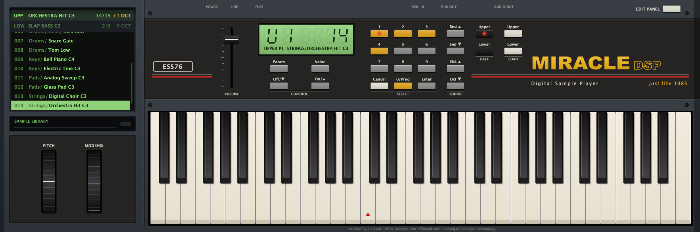
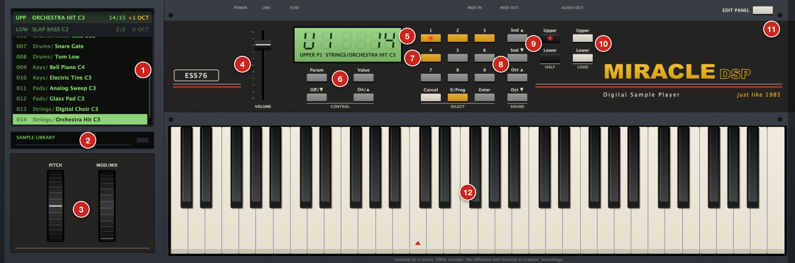
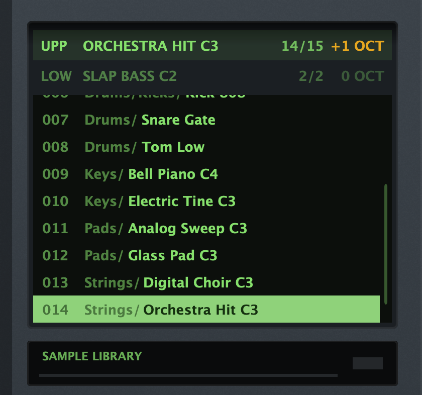
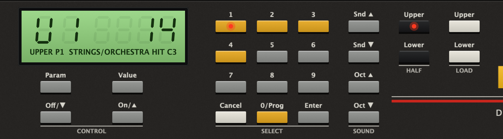
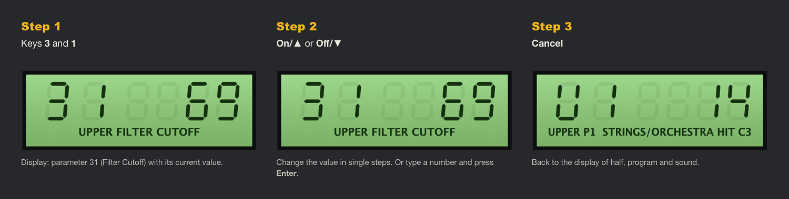
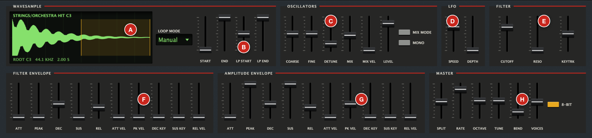

1. Overview
MIRACLE DSP is a sample player with the character of a 1980s 8-bit sampler: low sample rate with aliasing, 8-bit resolution and a resonant 4-pole low-pass filter. The interface follows the classic hardware layout, with a keypad, green display, disk tray, drive, and pitch and mod wheels.
- Formats: VST3, Audio Unit (AU) and a standalone app
- System: macOS 11 or later, Apple Silicon and Intel
- Two keyboard halves (LOWER/UPPER), each with its own sample folder
- Up to 16 voices, 2 oscillators per voice

2. Installation
- Double-click MIRACLE DSP Installer.pkg.
- If macOS reports an unidentified developer: right-click the file → Open → Open. Or click Open Anyway under System Settings → Privacy & Security.
- Follow the installer steps and confirm with your Mac password.
- Restart your DAW (Logic, Ableton, Cubase …). Run a plugin rescan if needed.
| Component | Location |
|---|---|
| Audio Unit | /Library/Audio/Plug-Ins/Components/MIRACLE DSP.component |
| VST3 | /Library/Audio/Plug-Ins/VST3/MIRACLE DSP.vst3 |
| Standalone app | /Applications/MIRACLE DSP.app |
In Logic, find the plugin under Instrument → AU Instruments → ESS76 → MIRACLE DSP.
3. Getting started
- Load the plugin on an instrument track. Without samples it plays a built-in waveform (“INIT WAVE”), so you hear something straight away.
- On the right of the keypad under LOAD, press the white Upper key and choose a sample folder or a single WAV file. You can also drag either one onto the plugin.
- Step through the sounds with Snd ▲ and Snd ▼, or click a sound in the disk tray on the left.
- Repeat with Lower for the left part of the keyboard.
- The EDIT PANEL key at the top right opens all controls.
4. The interface

| No. | Element | Function |
|---|---|---|
| 1 | Disk tray | One line each for UPPER and LOWER with sound, position and octave. Below them, the list of all sounds of the active half. |
| 2 | Drive | Shows the name of the folder loaded for the active half. |
| 3 | PITCH / MOD/MIX | The pitch wheel springs back to the centre. The mod wheel raises the LFO depth (vibrato). Both move along when you use the wheels on your MIDI keyboard. |
| 4 | VOLUME | Master volume. |
| 5 | Display | Parameter number on the left, value on the right. When idle: active half and program (e.g. U1), sound number and name. |
| 6 | CONTROL | Param, Value, Off/▼, On/▲ (see chapter 6). |
| 7 | SELECT | Number keys, Cancel, 0/Prog, Enter. |
| 8 | SOUND | Snd ▲/▼ steps through the sounds, Oct ▲/▼ transposes the active half in octaves (−3 to +3). |
| 9 | HALF | Selects the half you are editing. The active key lights up. |
| 10 | LOAD | Opens the file dialog for UPPER or LOWER: a folder or a single audio file. |
| 11 | EDIT PANEL | Opens and closes the panel with all controls. |
| 12 | Keyboard | 61 keys (C1–C6) for playing with the mouse. |
5. Loading and choosing sounds

- Loading: press Upper or Lower under LOAD, then choose a folder or a file. Subfolders are included. If you choose a single file, the plugin loads its whole folder and selects that file, so you can keep browsing.
- Drag & drop: drag a folder or file onto the plugin. Dropped on an UPP/LOW line it goes to that half, otherwise to the active half.
- Formats: WAV (8/16/24/32 bit, float, also compressed such as µ-law, A-law and ADPCM, upper-case extensions included), AIFF, FLAC, OGG, MP3. Up to 5000 files.
- Browsing: Snd ▲ / ▼ (hold for fast stepping). After the last sound the selection wraps around.
- Mouse wheel: over an UPP/LOW line, steps through that half.
- List: click to choose a sound. After clicking into the list, ↑ ↓ work too.
- Switching the active half: click an UPP/LOW line or use the keys under HALF.
Sample pitch
Each sound plays across the whole half. The plugin finds its root note automatically:
- from the file metadata (e.g. a WAV with a stored root note), otherwise
- from the file name, e.g.
Piano_C3.wav,Bass F#2.wav,Str-Eb4.aif, otherwise - C3.
Note names follow Logic and Ableton: C3 = middle C (MIDI 60). Use Oct ▲/▼, COARSE and FINE to retune each half.
6. The keypad
The keypad works like those on 1980s samplers: every parameter has a two-digit number. The full list is in chapter 8 and in the technical documentation.

Changing a parameter

- Type two digits, e.g. 3 and 1 for Filter Cutoff. The display shows number, value and name.
- On/▲ or Off/▼ changes the value in steps (hold for fast changes). The same keys switch on/off parameters.
- Or type the value and confirm with Enter, e.g. 4, 0, Enter.
- Cancel returns to the idle display.
| Key | Function |
|---|---|
| Param | Enter a new parameter number. After that, On/▲ and Off/▼ step through the parameters. |
| Value | Back to the value of the selected parameter. |
| Off/▼, On/▲ | Change the value; in Param mode, change the parameter. On the idle display they change the most recently selected parameter (Filter Cutoff at startup). |
| 1–9 | Digits. The amber keys 1–4 also show the active program. |
| 0/Prog | Program selection from the idle display: 0/Prog, then 1–4. While the display shows a parameter or a number is being typed, the key acts as digit 0. |
| Enter | Applies a typed value. |
| Cancel | Cancels the entry. |
7. The EDIT PANEL
The EDIT PANEL key folds out all controls below the keyboard. The faders apply to the active half, MASTER to both. The plugin remembers whether the panel is open.

| Field | Section | Contents |
|---|---|---|
| A | WAVESAMPLE | Waveform with play range and loop (amber). |
| B | Loop and start/end | Loop Mode, START, END, LP START, LP END. |
| C | OSCILLATORS | Tuning, mix, level, Mix Mode, Mono. |
| D | LFO | Speed and depth. |
| E | FILTER | Cutoff, resonance, keyboard tracking. |
| F | FILTER ENVELOPE | Envelope for the filter. |
| G | AMPLITUDE ENVELOPE | Envelope for the volume. |
| H | MASTER | Split, Rate, Octave, Tune, Bend, Voices, 8-Bit. |
- Drag a fader to change its value, double-click to reset it to the default.
- Hover over a fader to see its number and full name.
8. Parameters in detail
The number is the parameter number for the keypad.
Wavesample and loop
| No. | Parameter | Effect |
|---|---|---|
| 60 | Loop Mode | 0 = Off: the sample plays once. 1 = Manual: loop between LP START and LP END. 2 = File: loop stored in the file; without one the sample plays once. |
| 61 62 | LP START / LP END | Loop points in per mille of the play range (0–1000), Manual only. |
| 63 64 | START / END | Play range of the sample (0–1000). |
Oscillators
| No. | Parameter | Effect |
|---|---|---|
| 34 | OCTAVE | Transposes in octaves (−3 … +3), also via Oct ▲/▼. |
| 29 | COARSE | Transposes in semitones (±24). |
| 30 | FINE | Fine tuning in cents (±50). |
| 26 | DETUNE | Detunes oscillator 2 by up to 50 cents. Only audible when MIX > 0. |
| 27 | MIX | Balance between oscillator 1 (0) and 2 (99). With DETUNE this gives a chorus effect. |
| 28 | MIX VEL | Velocity shifts the mix towards oscillator 2. |
| 39 | LEVEL | Volume of the half. |
| 22 | MIX MODE | Oscillator 2 plays the next sound in the list, so two samples can be layered. |
| 23 | MONO | Monophonic, the last key pressed has priority. |
LFO
| No. | Parameter | Effect |
|---|---|---|
| 24 | SPEED | Vibrato speed (about 0.1–20 Hz). |
| 25 | DEPTH | Base vibrato depth. The mod wheel adds to it, up to ±3 semitones at full. You only hear this if the sound rings long enough. |
Filter
| No. | Parameter | Effect |
|---|---|---|
| 31 | CUTOFF | Cutoff frequency of the 4-pole low-pass. Low values sound dull. |
| 32 | RESO | Resonance (0–40). High values emphasise the cutoff, up to self-oscillation. |
| 33 | KEYTRK | How closely the filter follows pitch (0 = not at all, 4 = fully). |
Envelopes
The filter envelope 40–49 and the amplitude envelope 50–59 have the same layout:
| Control | Effect |
|---|---|
| ATT | Time to reach the peak. |
| PEAK | Peak level. On the filter envelope: how far the filter opens. |
| DEC | Time to fall from the peak to the sustain level. |
| SUS | Level held while the key is down (relative to the peak). |
| REL | Fade time after the key is released. |
| ATT VEL | Hard playing shortens the attack. |
| PK VEL | Soft playing lowers the peak. |
| DEC KEY | High keys decay faster, as on a piano or guitar. |
| SUS KEY | High keys have a lower sustain level. |
| REL VEL | Fast key release shortens the release (if your keyboard sends release velocity). |
Times range from about 1.5 ms (0) to 30 s (99).
Master
| No. | Parameter | Effect |
|---|---|---|
| 70 | SPLIT | First key of the UPPER half (C3, MIDI 60, by default). |
| 71 | RATE | Sample rate of the 8-bit emulation in kHz (8–33). Lower sounds rougher and duller. |
| 77 | OCTAVE | Transposes both halves together in octaves (−3 … +3). The octave per half (34) adds to this. |
| 72 | TUNE | Master tuning in cents (±50). |
| 73 | BEND | Pitch bend range in semitones (0–12). |
| 74 | VOICES | Maximum number of voices (1–16). |
| 75 | VOLUME | Master volume (fader on the main panel). |
| 76 | 8-BIT | On: 8-bit sound with aliasing. Off: clean playback. |
9. Programs and keyboard halves
Each half has 4 programs. A program stores all controls of that half (oscillators, LFO, filter, envelopes, loop). The sound folder and the selected sound belong to the half, not to the program.
- To choose a program: press Cancel if needed, then 0/Prog and 1–4. The current settings are kept in the previous program and the new one is loaded.
- A red LED in key 1–4 shows the active program.
- An empty program starts as a copy of the current settings.
- MASTER parameters apply to both halves and all programs.
10. Saving
There is nothing extra to save. When you save your DAW project, the plugin stores:
- all controls and switches,
- the folders of both halves and the selected sounds,
- all 8 programs,
- whether the EDIT PANEL is open.
The plugin also remembers the most recently used folders and sounds. A new instance starts with them automatically.
11. Sound tips
- Classic 80s strings: MIX 50, DETUNE 20, CUTOFF 50, filter PEAK 40, amp ATT 35, REL 45.
- More lo-fi: set RATE to 10–15 kHz and transpose samples up one or two octaves with Oct ▲.
- Resonant bass: MONO on, CUTOFF 20, RESO 30, filter PEAK 60, filter DEC 30.
- Layered sounds: MIX MODE on, MIX 50. Two neighbouring files in the folder play together.
- Velocity response: raise amp PK VEL and filter PK VEL. Soft playing then sounds quieter and duller.
12. Troubleshooting
| Problem | Solution |
|---|---|
| Plugin does not appear in the DAW | Restart the DAW and run a plugin rescan. In Logic: Settings → Plug-in Manager → Reset & Rescan Selection. |
| Installer will not open | Right-click → Open, or System Settings → Privacy & Security → Open Anyway. |
| No sound | Check VOLUME, LEVEL and amp PEAK. Is the key you play in the half you expect (SPLIT)? |
| Sound is out of tune | The root note was not found (“ROOT C3 (DEFAULT)” in the waveform). Retune with Oct, COARSE or FINE, or put the root note in the file name. |
| Sound stops early | Set Loop Mode to Manual or check END. Samples longer than 30 s are cut. |
| “NO AUDIO FILES” | The folder contains no supported files. |
| “UNREADABLE” / “CANNOT READ THIS FILE” | The file is damaged or not a real audio file. The plugin plays the INIT WAVE instead. Choose the next sound. |
| Keyboard wheels do nothing | In a DAW, the track must receive MIDI. In the standalone app, enable the MIDI input under Options → Audio/MIDI Settings. |
| Display shows “NO SUCH PARAMETER” | That number does not exist. See the list in chapter 8. |
| Digits change a value instead of a parameter | The keypad is in value mode. Press Param first, see chapter 6. |
| Too distorted | Lower VOLUME or LEVEL, reduce RESO. |
13. Uninstalling
Double-click Uninstall - Deinstallieren.command and confirm with your Mac password. The script removes the plugins, the app and saved settings. Your samples and DAW projects are not touched.
If macOS blocks the script: right-click → Open.